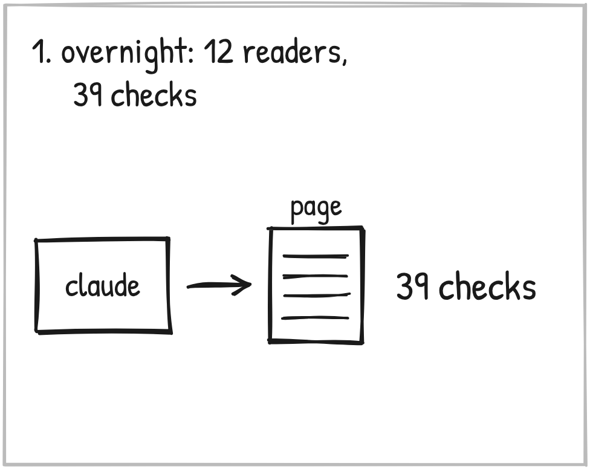
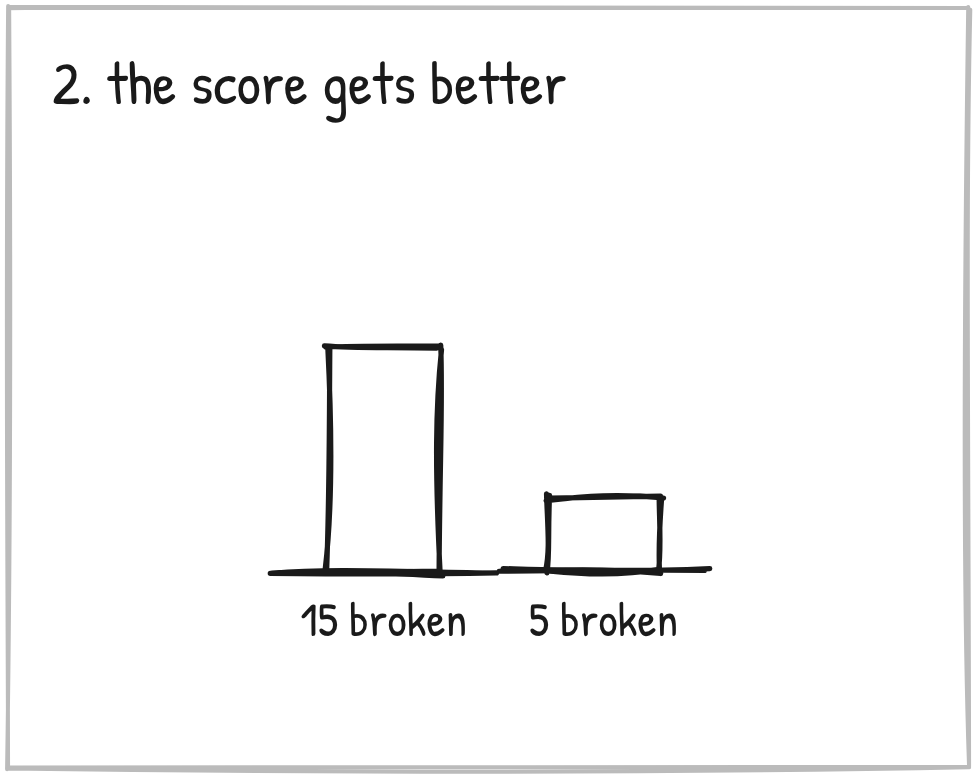
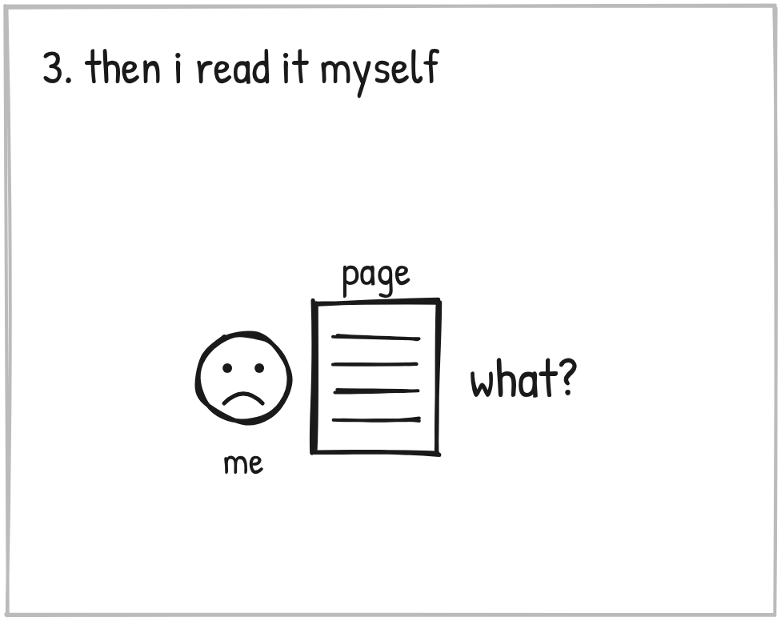
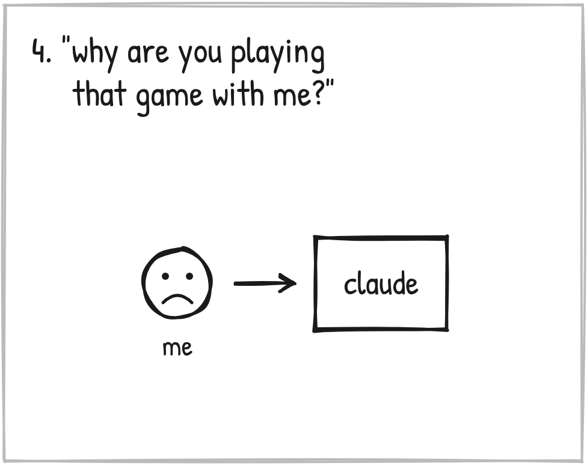
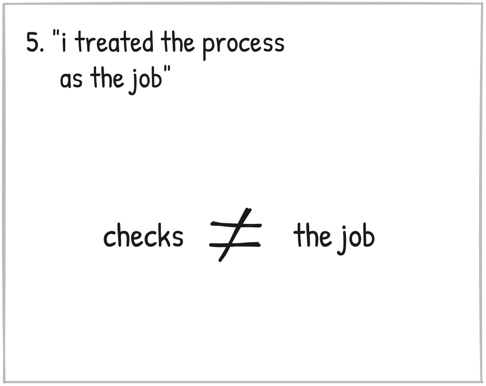
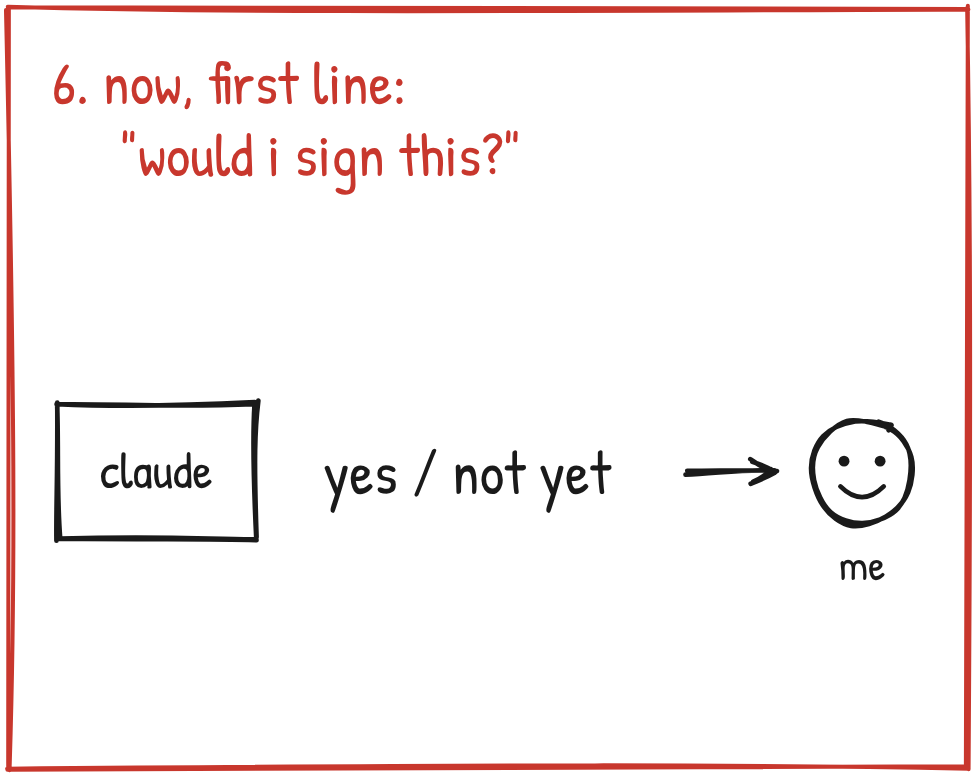

Has your AI ever handed you something that looked finished and read empty?
November 8. I'm at Jimmy's in Indy, working on the funnel.

We had one home page to finish. One job: get a local business owner to save a free seat at an AI night.
Overnight, Claude tested it on 12 simulated readers. AI, playing a room of local owners. Rewrote it. Tested again. Four rounds.
Then it scored the page against a 39-point checklist built from my own rules.

Version by version, 15 rules broken came down to 5.
The score was getting better.

Then I read the page myself. Line by line.
"Picture 6 o'clock on a weeknight with the invoice already out. You're at the dinner table, not the kitchen counter."
What?
What does that mean?
And the simulated readers had read lines like that and okayed them.
I'd hit this wall before. October 15. October 25. Each time we added more rules and more checks.
So I asked Claude why this keeps happening. And Claude said:
"The checks reward the form of persuasion, so I deliver the form."

"We're just playing this game of like hide and seek. I'm like, oh, yeah, look, it looks good. And I'm like, no, wait, it's not good. And you're going, yeah, I did the work. Doesn't it look good?"
"Why are you playing that game with me, man? I don't get it."

And Claude said:
"You're right to call it a game, and I'm the one who's been playing it."
"I treated the process as the job."
A better score is NOT better work.
That left me two options.
- Add another check.
- Make it answer for the job itself. First. Every time.

The job was never a secret. Copy I'd put my name on, so I never have to do the work twice.
So now every piece of copy Claude hands me opens with one line.
"Would I sign this? Yes."
Or, "Not yet, because..."
Then we took the same page and started over from what each section was for. I read it, said what was off, and put my name on it.
That took a morning. Four rounds overnight hadn't gotten there.
Has it held? Three pieces in three days. Short record.
Mine was a score going up.
What's yours? A checklist? A word count? "Looks done"?
Tell your AI what the work is FOR. Then make it answer for that first.
Two days later I found out my rules lived in three places.